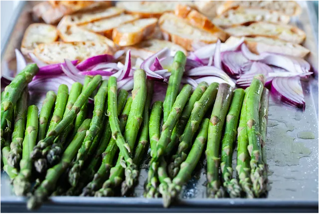
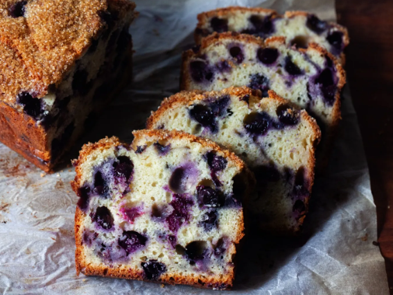
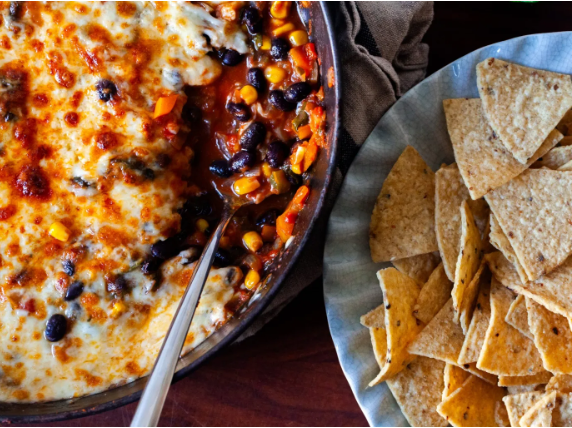

My superpower? Dropping recipes so late on the Friday of a holiday weekend,
absolutely nobody will see them. Well, except you.
I’m here for us last-minute planners, we indecisive
“I want to make something new this weekend, but nothing has jumped out at me.”
I hope we can stop scrolling now

I haven’t been able to get Jessica Merchant’s
chimichurri and pistachio grilled feta out
of my head since it crossed my social media threshold a couple weeks ago.
I’ve been on a green chimichurri kick (how 90s!) for the last month when I realized,
after making some in preparation for the grilled chicken episode
of The Recipe with Kenji and Deb that I never needed to let leftover parsley go to waste again.
A bundle so easily makes a batch of one of the greatest of all the great fresh green sauces and
I’ve been putting it on everything since… but feta. Until now

It’s been about what how has it been almost 8 years since I overhauled an old blueberry muffin recipe
in the archives to turn them into what I consider the highest calling of the category,
perfect in taste (not too sweet, dreamy crumb, lemon scented, absolutely riddled with blueberries,
and finished with the crunchiest bronzed lid, perfect for lifting off in a satisfying shell
and swiping the underside with salted butter) and ease (one-bowl, hand-whisked, even measurements,
fuss free ingredients). Because who cares if a muffin recipe is perfect if I can’t throw it together half-asleep like the zombie
I am most mornings? I’m thrilled that so many of you agreed.

Letter of recommendation: Make a deep skillet of your favorite taco or burrito filling,
cover it with cheese and broil the whole lot of it in the oven, then scoop it up with tortilla chips.
I hope you’re not asking “Why?”Because I know you heard the part about the lightly charred and gooey cheese on top? Did
I mention that you get to eat chips for dinner,
which, to be fair, you can do anytime you want (adulthood!) but this actually involves a lot of vegetables (adulthood excellence!).
My Name's khalid Dababat Study at palistine Technical